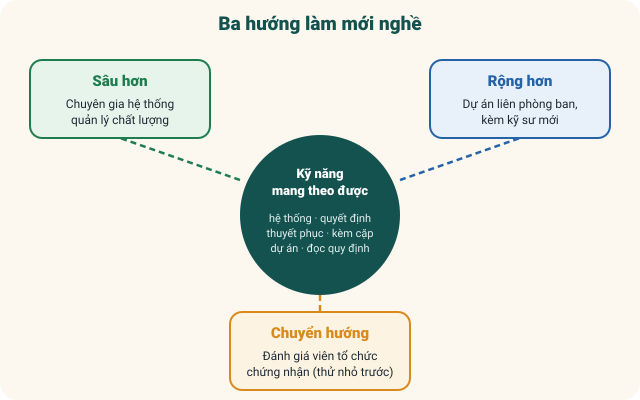

K7 · Tự học và phát triển nghề nghiệp › Bậc 4 Thành thạo
Ôn tập: làm mới nghề nghiệp bằng kế hoạch 1–3 năm
Bài này làm Tờ 8: Kế hoạch nghề 1–3 năm. Mẫu in. Bài dùng lại Kể ví dụ STAR và nối tiếp Ôn tập: buổi đánh giá 90 ngày (Bậc 3).
1. Mục tiêu
- Liệt kê 5 kỹ năng mang theo được, mỗi kỹ năng có một bằng chứng từ Sổ công cụ chuyên gia.
- Lập kế hoạch nghề 1–3 năm: một hướng đi, một thử nghiệm nghề nhỏ, 3 mốc đo được.
2. Khởi động truy xuất
Câu hỏi trộn từ cả khóa. Trả lời không nhìn gì, rồi mới mở đáp án.
- Ba điều cần nhìn thấy trong một hệ thống là gì?
- Năm bước của phiếu quyết định là gì?
- Lập trường khác lợi ích thế nào?
- Bốn bước gỡ bất đồng là gì?
- Bốn nấc giao việc khi kèm cặp là gì?
- Vì sao trang dự án cần ô "không làm"?
- Ba mốc thời gian cần ghi khi đọc một văn bản mới là gì?
Đáp án
- Tác động dây chuyền, vòng lặp, độ trễ. (Bài 1)
- Phân loại; ghi giả định; tín hiệu đổi ý; tưởng tượng thất bại; ngày xem lại. (Bài 2)
- Lập trường là điều người ta đòi. Lợi ích là lý do đằng sau. (Bài 3)
- Sự kiện; diễn giải; tiêu chí chung; thử nghiệm hoặc chuyển lên. (Bài 4)
- Làm mẫu; làm cùng; quan sát; tự làm. (Bài 5)
- Để chặn việc dự án phình ra. (Bài 6)
- Ngày ký; ngày có hiệu lực; ngày văn bản cũ hết hiệu lực. (Bài 7)
Câu nào sai, học lại bài đó trước khi làm tiếp.
3. Giải thích
Sau nhiều năm làm một việc, nhiều người thấy chững lại. Có người muốn đi sâu hơn. Có người muốn đổi hướng. Cả hai đều cần kế hoạch.
Kỹ năng mang theo được là kỹ năng dùng được ở nhiều nghề. Bảy tờ trong khóa này đều là kỹ năng như vậy. Một kế toán biết gỡ bất đồng vẫn dùng được kỹ năng đó khi làm quản lý dự án.
Ba hướng làm mới nghề:
- Sâu hơn: trở thành chuyên gia đầu ngành trong việc đang làm.
- Rộng hơn: nhận thêm việc gần kề, như kèm cặp, dự án liên phòng ban.
- Chuyển hướng: sang nghề khác, mang theo kỹ năng cũ.

Thử nhỏ trước khi chuyển. Đừng nghỉ việc chỉ vì một cảm hứng. Hãy thử nghề mới ở quy mô nhỏ: một dự án phụ, một khóa ngắn, nói chuyện với 3 người đang làm nghề đó. Đây là quyết định khó đảo ngược, nên cần dữ liệu như ở Bài 2.
Mạng lưới nghề nghiệp. Người đi trước cho bạn thông tin mà sách không có. Mỗi quý, hẹn một buổi trò chuyện với một người làm nghề bạn quan tâm. Chuẩn bị câu hỏi cụ thể.
Tờ 8. Kế hoạch nghề 1–3 năm
- 5 kỹ năng mang theo đượcMỗi kỹ năng một bằng chứng STAR.
- Hướng điSâu hơn, rộng hơn hay chuyển hướng.
- Kỹ năng cần học thêmTối đa 2 cái, có cách học.
- Thử nghiệm nghề nhỏLàm gì, trong bao lâu, đo gì.
- 3 mốc đo được6 tháng, 1 năm, 3 năm.
Ôn lại khóa theo lịch giãn cách: sau 1, 3 và 7 ngày, tự trả lời lại 7 câu ở phần 2.
4. Ví dụ tại nơi làm việc Việt Nam
Tình huống giả định. Anh Đức là kỹ sư chất lượng 8 năm ở một nhà máy điện tử tại Bắc Giang. Anh thấy công việc lặp lại và muốn làm mới nghề.
Anh liệt kê 5 kỹ năng mang theo được. Mỗi kỹ năng có bằng chứng. Ví dụ: "Nhìn theo hệ thống: sơ đồ tác động giúp giảm 30% lỗi hàn lặp lại trong 6 tháng."
Anh cân nhắc ba hướng. Hướng chuyển: làm đánh giá viên cho một tổ chức chứng nhận. Anh chưa biết mình có hợp với việc đi công tác nhiều không. Đây là giả định tự tin thấp.
Anh lập thử nghiệm nghề nhỏ trong 3 tháng. Nói chuyện với 3 đánh giá viên đang làm nghề. Tham gia một đợt đánh giá nội bộ ở nhà máy khác cùng tập đoàn. Đo: anh có muốn làm tiếp việc đó 5 ngày liền không?
Mốc 6 tháng: hoàn thành một khóa đánh giá viên nội bộ. Mốc 1 năm: tham gia 4 đợt đánh giá nội bộ. Mốc 3 năm: quyết định có chuyển hẳn hay không.
Vì sao cách này tốt: bằng chứng cụ thể cho từng kỹ năng. Anh thử nhỏ trước một quyết định khó đảo ngược. Mốc đo được, có thời gian.
5. Thực hành
Tình huống giả định. Bạn là chuyên viên phân tích dữ liệu 6 năm ở một ngân hàng tại Hà Nội. Bạn đang phân vân giữa đi sâu về dữ liệu và chuyển sang quản lý sản phẩm.
Viết 3 kỹ năng mang theo được, mỗi kỹ năng một bằng chứng. Chọn một hướng. Thiết kế một thử nghiệm nghề 3 tháng và 3 mốc.
Gợi ý 1
Lấy bằng chứng từ các tờ bạn đã làm trong khóa: sơ đồ tác động, phiếu quyết định, đề xuất một trang.
Gợi ý 2
Thử nghiệm nghề nhỏ có thể làm ngay trong công ty: nhận một phần việc của nhóm sản phẩm.
Lời giải mẫu
- Kỹ năng 1: thuyết phục. Bằng chứng: đề xuất một trang được duyệt, giảm 2 ngày làm báo cáo tháng.
- Kỹ năng 2: gỡ bất đồng. Bằng chứng: hòa giải hai nhóm về định nghĩa "khách hàng hoạt động".
- Kỹ năng 3: dự án gọn nhẹ. Bằng chứng: dẫn dự án làm sạch dữ liệu 8 tuần, đúng hạn.
- Hướng: chuyển sang quản lý sản phẩm.
- Thử nghiệm 3 tháng: xin tham gia nhóm sản phẩm thẻ, 20% thời gian. Phụ trách phân tích phản hồi khách. Đo: mình có thích việc phỏng vấn khách và sắp ưu tiên tính năng không?
- Mốc: 6 tháng: viết 2 đề xuất tính năng được nhóm chấp nhận. 1 năm: phụ trách một tính năng nhỏ từ đầu đến cuối. 3 năm: làm quản lý sản phẩm chính thức.
(Số liệu là giả định.)
6. Tự kiểm tra
Chọn đáp án. Mỗi lựa chọn đều có giải thích.
Câu 1. Bạn muốn chuyển nghề nhưng chưa biết mình có hợp không. Bước nào hợp lý nhất?
-
Chưa đúng. Đây là quyết định khó đảo ngược mà chưa có dữ liệu. Rủi ro cao.
-
Đúng. Đúng. Thử nhỏ cho bạn dữ liệu thật trước một quyết định lớn.
-
Chưa đúng. Không thử thì không bao giờ có thêm thông tin để chắc hơn.
Câu 2. Câu nào là bằng chứng tốt cho kỹ năng "thuyết phục"?
-
Chưa đúng. Đây là tự nhận xét, không có việc cụ thể hay kết quả.
-
Đúng. Đúng. Có việc cụ thể, kết quả đo được và thời gian.
-
Chưa đúng. Mơ hồ, không có tình huống hay kết quả kiểm được.
Câu 3. Ôn trộn: một chỉ tiêu làm nhân viên kết thúc cuộc gọi sớm, khách gọi lại nhiều hơn. Đây là gì?
-
Đúng. Đúng. Kết quả cuối tác động ngược về chỗ bắt đầu, làm vấn đề tự lớn dần.
-
Chưa đúng. Nhân viên đang làm đúng theo chỉ tiêu. Vấn đề nằm ở thiết kế hệ thống.
-
Chưa đúng. Câu hỏi nói về vòng tác động, không phải loại quyết định.
Câu 4. Ôn trộn: người bạn kèm đã tự làm tốt một việc nhiều lần. Bạn nên làm gì?
-
Chưa đúng. Kiểm mãi làm họ chậm tiến bộ và bạn mất thời gian.
-
Đúng. Đúng. Người kèm lùi lại khi người được kèm đã làm được.
-
Chưa đúng. Làm mẫu là nấc đầu. Lùi về đó không giúp họ tự chủ hơn.
Câu 5. Ôn trộn: một nghị định mới vừa được ký. Việc đầu tiên khi cập nhật tài liệu nội bộ là gì?
-
Chưa đúng. Ngày ký khác ngày có hiệu lực. Sửa sớm có thể áp dụng sai thời điểm.
-
Đúng. Đúng. Biết đúng các mốc thời gian rồi mới lập bảng việc.
-
Chưa đúng. Ở vị trí senior, bạn thường là người phải đọc và cập nhật đầu tiên.
7. Phản tư
- Trong bảy tờ của khóa, tờ nào bạn dùng nhiều nhất? Tờ nào bạn né?
- Nếu 3 năm nữa bạn vẫn làm đúng việc hôm nay, bạn thấy thế nào?
8. Áp dụng thật
Trong 7 ngày tới, làm Tờ 8. Đưa cho một người bạn tin để kiểm chéo: bằng chứng có thuyết phục không, mốc có đo được không. Hẹn một buổi trò chuyện với một người đang làm nghề bạn quan tâm.
9. Siêu dữ liệu
| skill | K7 · Tự học và phát triển nghề nghiệp |
|---|---|
| level | Bậc 4 · Thành thạo |
| group | N4 |
| framework_map | WEF: Curiosity and lifelong learning; CSfW: 1a Manage career and work life; SkillsFuture CCS: Learning Agility; Adaptability; NACE: Career and Self-Development; LifeComp: L3 Managing learning (chỉ dẫn chiếu) |
| updated | 2026-11-14 |
Hoàn thành bài
Đánh dấu đã học để site gợi ý lịch ôn sau 1, 3 và 7 ngày. Dữ liệu chỉ lưu trên máy của bạn.
Lịch ôn gợi ý: